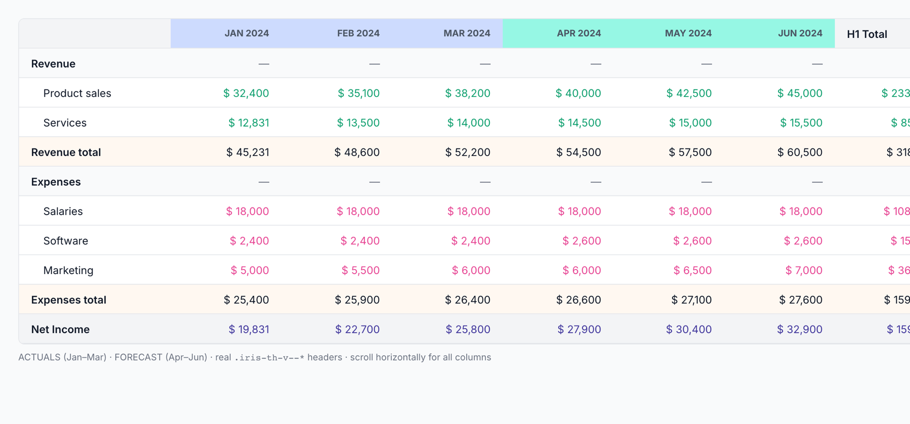
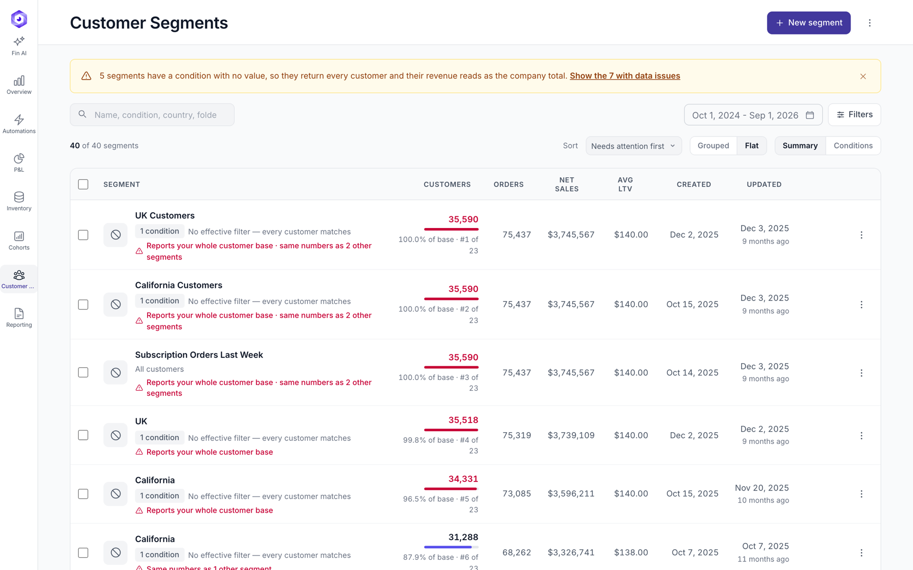
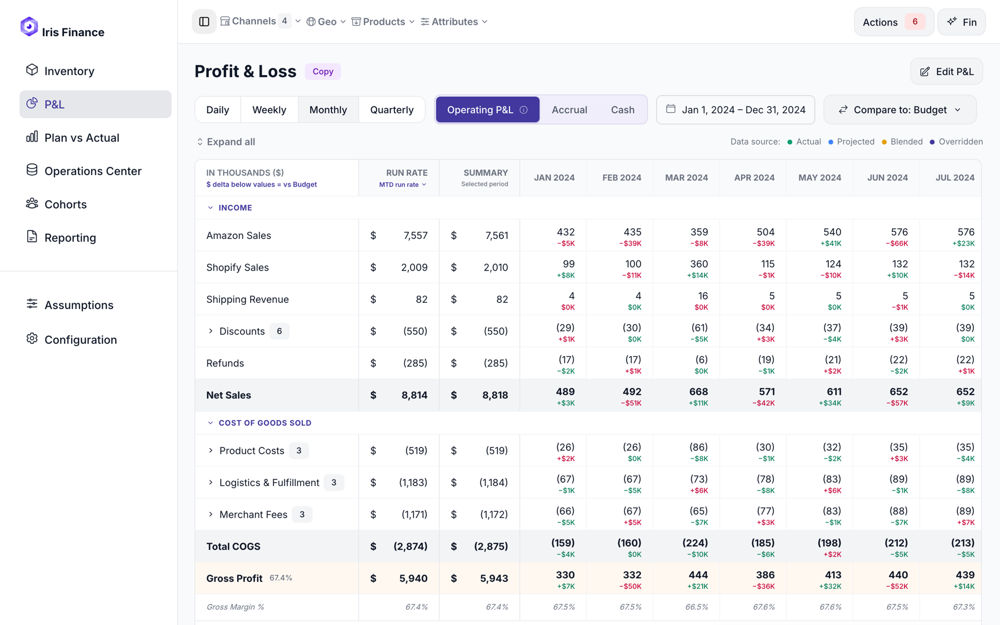

A component library developers can copy from
447 CSS classes audited against their documentation; 12 families rebuilt because the story was a drawing, not the component.
Design system, research, and running pages built from it — for an analytics platform used by ecommerce brands.

447 CSS classes audited against their documentation; 12 families rebuilt because the story was a drawing, not the component.

Five of forty segments returned the entire customer base — and ranked first, because they carried the most revenue.

A −13% shipping miss was $1K; a −4% Amazon miss was $18K. Dollars sum to the total, percentages do not.